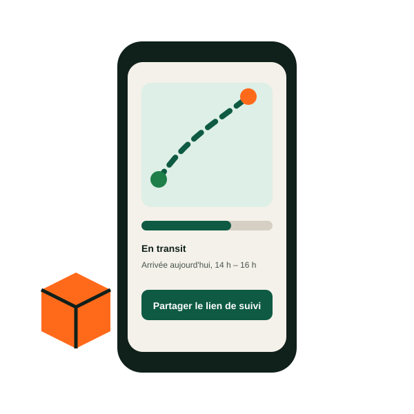

Coursier en ville
Documents et colis livrés à moto dans la journée à Kinshasa, Lubumbashi et Goma.
À partir de 5 000 FC
Kinshasa · Lubumbashi · Goma · 12 villes en RDC
Un coursier chez vous en 45 minutes, le prix affiché avant de réserver, le paiement par M-Pesa, Orange Money ou Airtel Money, et un SMS à chaque étape jusqu'à la signature.

Services
Quatre services, une seule application, un seul numéro de suivi.
Documents et colis livrés à moto dans la journée à Kinshasa, Lubumbashi et Goma.
À partir de 5 000 FC

Par la route vers Matadi, Boma et Kikwit, par avion vers Lubumbashi, les Kivu, Kisangani et les Kasaï.
À partir de 15 000 FC

Stockage, préparation, livraison et contre-remboursement reversé en 24 heures.
À partir de 3 750 FC par commande

Marché, restaurant, pharmacie : nous achetons et livrons dans le centre de Kinshasa. Achats en plus.
À partir de 6 000 FC
Comment ça marche

Départ, arrivée, taille du colis : le prix s'affiche avant de confirmer. Sur le site, l'application ou WhatsApp.

Un coursier arrive en 45 minutes en moyenne, ou déposez le colis dans l'un de nos 28 points relais.

SMS ou WhatsApp à chaque étape, position du coursier en direct le jour de la livraison.

Le destinataire signe sur le téléphone du coursier. Photo de preuve et reçu dans votre compte.

Paiement
Mobile money, carte ou espèces au coursier. L'expéditeur ou le destinataire peut régler, et le contre-remboursement est reversé en 24 heures.
Entreprises
Boutiques en ligne, pharmacies, banques et distributeurs nous confient leurs livraisons, leur stock et leurs encaissements.

Coursiers
Payé à la course, versement chaque vendredi sur mobile money, casque, gilet et assurance fournis. Pas de moto ? Le programme Kimia Moto vous en loue une.
Actualités
Les montants encaissés par nos coursiers sont reversés aux boutiques le lendemain de la livraison, sur M-Pesa, Orange Money, Airtel Money ou par virement. Le délai était de sept jours.
Les comptes de plus de 1 000 colis par mois sont payés chaque jour à 18 h.
Trois vols cargo par semaine desservent désormais Mbandaka. Les colis de plus de 100 kg partent par barge depuis Kinshasa, sur devis, en huit à douze jours.
Le point relais Boutique Bolingo, près du port, reçoit et remet les colis du lundi au samedi.
Pendant six mois, trente coursiers de la Gombe et de Lingwala roulent sur des motos électriques rechargées au hub et à l'agence de la Gombe, avec batteries échangeables.
Nous mesurons l'autonomie réelle, le coût par course et les pannes avant de décider d'un déploiement plus large.